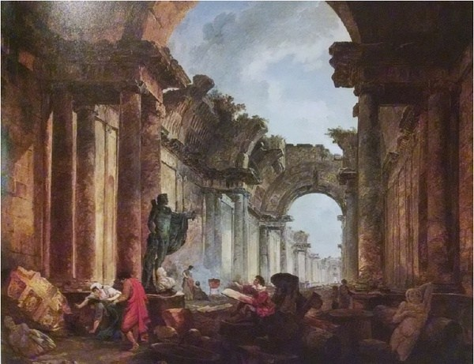
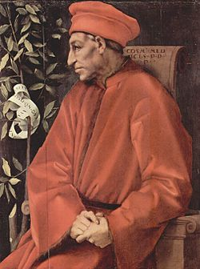
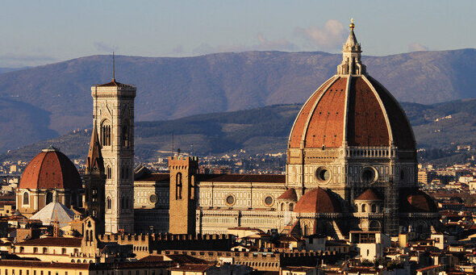
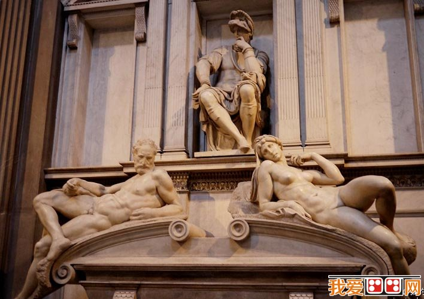

文艺复兴
Rinasimento
@zhangxu友情提供
概览
- 美第奇家族
- 雕塑建筑
- 绘画
佛罗伦萨

为什么是佛罗伦萨
- 纺织业的兴起
- 金融业的发展（兑换货币）
- 商人团体掌权
衰亡的罗马城
但丁

美第奇家族(House of Medici)
科西莫.美第奇
美第奇家族族徽

圣母百花大教堂
圣母百花教堂局部
万神殿
万神庙最初的历史可追溯到公元前27年的罗马共和国时期，该庙由屋大维的副手阿格里巴所建。
圣洛伦佐教堂

昼夜晨昏

洛伦佐.美第奇墓(晨与昏)
昼夜
豪华者 洛伦佐.美第奇
- 艺术修养高
- 长于政治短于理财
- 对欧洲人文主义的诞生和发展起了很大作用
洛伦佐支持的艺术家
绘画(painting)
- 天上
- 天上人间
- 人间天上
- 人间
天上（圣母子）

中世纪意大利画家杜乔（1260-1319）的圣母子
文艺复兴初期(维纳斯的诞生)
波提切利的名画
圣家族
米开朗基罗的绘画作品《圣家族》
大卫
大卫像可以称得上是人类迄今为止最完美的大理石雕塑
创世纪
梵蒂冈西斯廷教堂的壁画《创世纪》（天顶）
全景
最后的审判
梵蒂冈西斯廷教堂的壁画《最后的审判》（前方墙壁）
创造亚当
“创造亚当”是《创世纪》中最富想象力，最出色的作品
圣母子
达.芬奇作品《圣母子》，画中圣母从容中带有甜美
文艺复兴走向欧洲
圣彼得大教堂和前面的广场
教堂最著名的建筑师有拉斐尔，米开朗基罗和贝尼尼
蒙娜丽莎
达芬奇绘制于法国
更多的作品
创世纪（蛇的诱惑）

圣母怜子

米开朗基罗完成于25岁
雅典学院

拉斐尔

圣母子－拉斐尔

维纳斯

东方三博士的礼拜